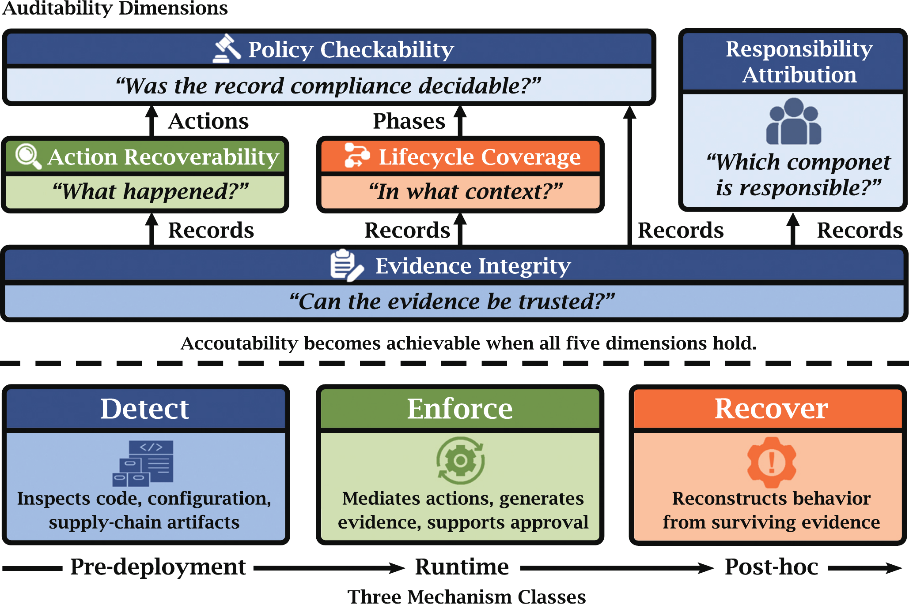

A framework for accountable AI agent systems.
LLM agents call tools, query databases, delegate tasks, and trigger external side effects. Once an agent system can act in the world, the question is no longer only whether harmful actions can be prevented; it is whether those actions remain answerable after deployment.
Auditable Agents is a position paper that defines what auditability means for agent systems. It introduces five jointly necessary dimensions, identifies three mechanism classes operating at successive temporal points, and provides layered empirical evidence that the auditability gap is real, closable, and practically addressable.
This work spans our AI Auditing & Assurance direction (the framework and Auditability Card) and AI Safety & Security direction (the ecosystem scan and runtime enforcement evidence).
Paper (arXiv) | Paper (PDF) | agent-audit | Aegis

Figure: A defensible audit verdict requires five jointly necessary dimensions (center), rooted in Evidence Integrity. Three mechanism classes (bottom) realize these dimensions at successive temporal points. No single class suffices.
The framework did not emerge in isolation. It grew out of building tools that address specific auditability gaps, and from studying failure modes that make auditability necessary. Each tool below instantiates one mechanism class; each finding is drawn from the paper.
Detect — Pre-deployment 617 findings
agent-audit is the underlying scanning tool (arXiv). In this paper, we used it to scan six prominent open-source agent projects and surfaced 617 security findings (details in the paper), showing that basic prerequisites for Action Recoverability are widely unmet before agents even run.
Enforce — Runtime 8.3 ms overhead
Aegis is a pre-execution firewall that sits between agents and tools, enforcing policies and generating tamper-evident audit trails (arXiv). Every intercepted tool call gets a signed, hash-chained record covering Action Recoverability, Policy Checkability, and Evidence Integrity in a single pass, at 8.3 ms median overhead.
Sovereign-OS takes enforcement further by embedding policy into the agent operating system itself, providing Lifecycle Coverage at the OS level: execution phases, budgets, and approval chains that a tool-level firewall cannot see.
Recover — Post-hoc ~0.95 accuracy
Implicit Execution Tracing embeds agent-specific signals into token distributions, enabling post-hoc recovery of which agent produced which output even when identity metadata and orchestration logs have been stripped. Token attribution accuracy reaches ~0.95 across topologies, directly addressing Responsibility Attribution under degraded conditions.
Why auditability is needed — Failure modes
Cross-user contamination: shared-state agents silently propagate information across user boundaries without any attacker. Without Action Recoverability and Lifecycle Coverage, these events are invisible after the fact.
The Autonomy Tax: defense training degrades agent task performance. This tension motivates why Enforce mechanisms must be lightweight; 8.3 ms overhead is practical precisely because it does not impose a capability tax.
A compact reporting artifact, analogous to model cards, that forces disclosure of auditability properties. A system can answer these questions well or badly, but it should not be allowed to answer them ambiguously.
Q1 through Q5 map to the five auditability dimensions; Q6 stress-tests what happens when logging assumptions break. The Aegis column is an illustrative partial card, not a canonical answer.